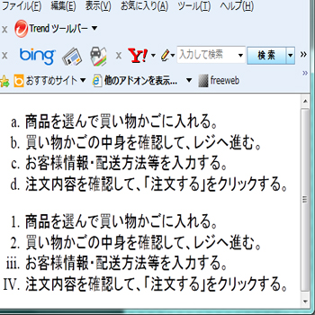
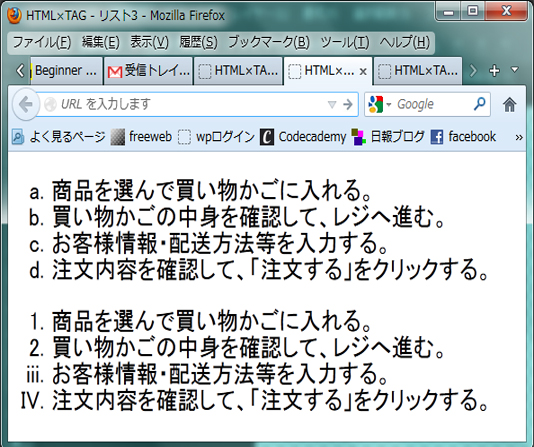

リストの番号の種類を変更したい
list-style-type:★ (★…decimal,decimal-leading-zero,lower-roman他)
| decimal | 10進数(1,2,3…) | decimal-leading-zero | 0を頭につけた10進数(01,02,03…98,99) |
| lower-roman | 小文字ローマ数字(ⅰ,ⅱ,ⅲ…) | upper-roman | 大文字ローマ数字(Ⅰ,Ⅱ,Ⅲ…) |
| lower-greek | 小文字ギリシャ文字(α,γ,β…) | lower-latin | 小文字アルファベット(a,b,c…) |
| upper-alpha | 大文字アルファベット(A,B,C…) | upper-latin | 大文字アルファベット(A,B,C…) |
| armenian | アルメニア数字 | none | 表示しない |
【css Source】
@charset "utf-8";
/* CSS Document */
#sample1{
list-style-type:lower-alpha;
}
#sample2{
list-style-type:lower-roman;
}
#sample3{
list-style-type:upper-roman;
}
#sample4{
list-style-type:square;
}
【html Source】
<body>
<ol id="sample1">
<li>商品を選んで買い物かごに入れる。</li>
<li>買い物かごの中身を確認して、レジへ進む。</li>
<li>お客様情報・配送方法等を入力する。</li>
<li>注文内容を確認して、「注文する」をクリックする。</li>
</ol>
<ol>
<li>商品を選んで買い物かごに入れる。</li>
<li>買い物かごの中身を確認して、レジへ進む。</li>
<li id="sample2">お客様情報・配送方法等を入力する。</li>
<li id="sample3">注文内容を確認して、「注文する」をクリックする。</li>
</ol>
</body>
| -Internet Explorer- | -Firefox- |
|---|---|
|  |  |
©2012 -takikawa,haebaru,hasegawa,ohura-